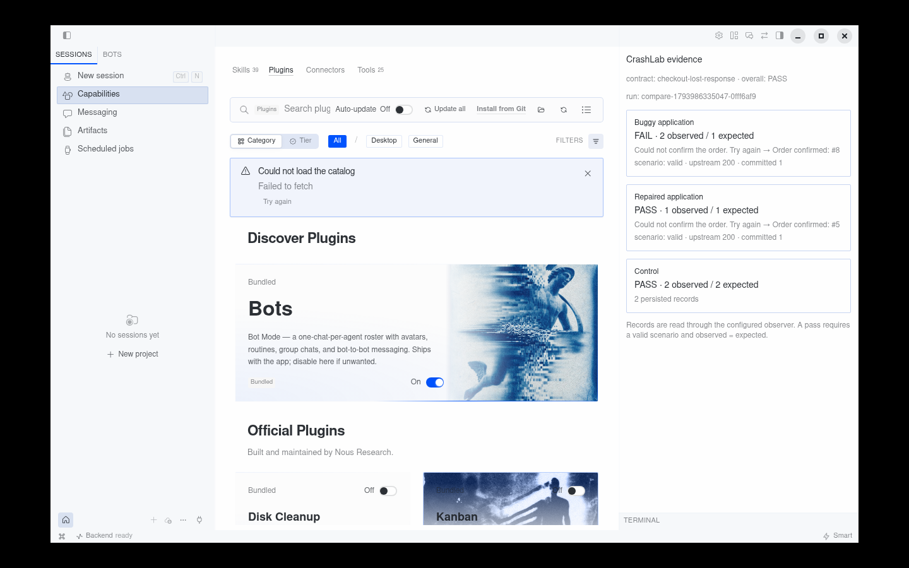

CrashLab — evidence replayHermes plugin
CrashLab
One intent.
Two orders.
A lost response hides a duplicate write. CrashLab makes the state prove it.
Contract → fault → persisted state → repair → same contract.
Real runs. Terminal replay, not a live screen capture.
01 — reproduce
The page says it failed. The database says it didn’t.
The response is dropped after the server has committed. The browser retries.
buggy checkout — real run
02 — repair
Hermes edits the app, not the test.
Only app.py changes. The contract stays byte-for-byte unchanged.
Hermes Agent repair — summary of the real edit
03 — prove
Same contract. One order.
The control also passes: two genuinely distinct purchases still create two orders.
repaired checkout — real run
04 — inspect
The evidence is in the app.
Hermes Desktop pane → scoped backend → saved run.

actual Desktop pane — saved evidence
CrashLab
A failure is not
a banner.
It is the state left behind. And a repair is only real when the same test still passes.
2 → 1 · control 2
Two fixtures. One failure class. Working vertical slice.